4.6 SSD算法¶
学习目标
- 知道SSD的多尺度特征图的网络
- 知道SSD中先验框的生成方式
- 知道SSD的损失函数的设计
目标检测算法主要分为两类：
-
Two-stage方法：如R-CNN系列算法，主要思路就是通过Selective Search或者CNN网络产生一系列的稀疏矩阵的候选区域，然后对这些候选区域进行分类和回归，two-stage的方法优势在于准确率度高；
-
One-stage方法：如YOLO系列方法，主要思路就是均匀地在图片上不同位置进行密集采样，采样时使用不同尺度和长宽比box，然后利用CNN提取特征后直接进行分类和回归，整个过程只需要一步，所以优势在于速度快。我们接下来介绍的SSD方法也是单阶段的算法。
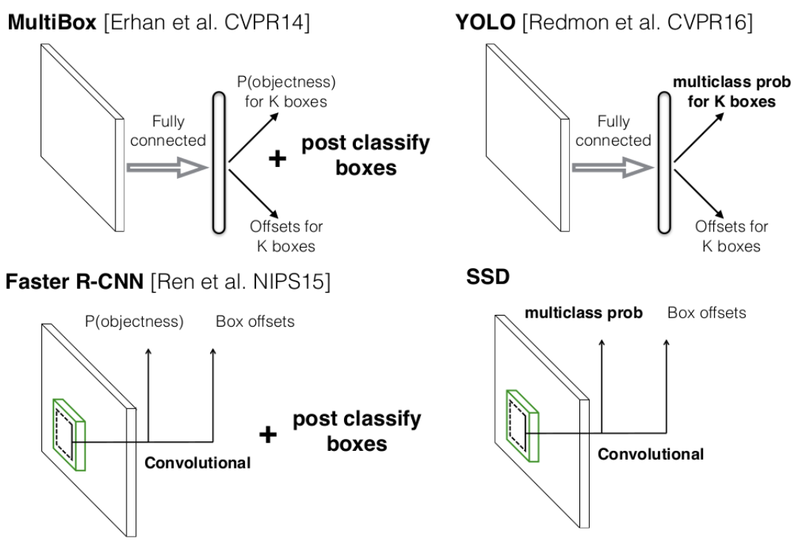
SSD算法的全名是Single Shot MultiBox Detector，Single shot指明了SSD算法属于one-stage方法，MultiBox指明了SSD是多框预测。对于Faster R-CNN，先通过CNN得到候选框，然后进行分类和回归，而YOLO和SSD可以一步完成检测，SSD的特点是：
-
SSD提取了不同尺度的特征图来做检测，大尺度特征图可以用来检测小物体，而小特征图用来检测大物体；
-
SSD采用了不同尺度和长宽比的先验框，在faster r-cnn和yoloV2,V3中称为Anchors。
1、 SSD网络结构¶
SSD是YOLO V1出来后，YOLO V2出来前的一款One-stage目标检测器。SSD用到了多尺度的特征图，在之后的YOLO V3的darknet53中，也是用到了多尺度特征图的思想。较浅层的特征图上，每个cell的感受野不是很大，所以适合检测较小的物体，而在较深的特征图上，每个cell的感受野就比较大了，适合检测较大的物体。
SSD采用VGG16作为基础模型，然后在VGG16的基础上新增了卷积层来获得更多的特征图以用于检测。如下图所示：
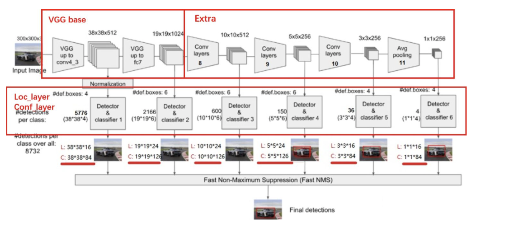
整个特征图分为三部分：
- backbone: VGGnet用于图片特征提取的网络
- Extra: 用于引出多尺度特征图的网络
- Loc和cls: 用于框位置回归和目标分类的网络
1.1 backbone¶
网络采用VGG16作为基础模型，使用imagenet数据进行预训练后，将conv4-1前一层的maxpooling中池化模式padding改为same(图中对应pytorch中的ceil_mode),使得输出为38x38，Conv4-3就是多尺度特征中的第一个38x38的特征图，因为该层比较靠前，所以在其后面增加了一个L2 Normalization层，对每个像素点在channle维度做归一化。VGG16最后的两个全连接层转换成 3x3 卷积层 conv6和 卷积层conv7，同时将最后的池化层由原来的stride=2的 2x2 变成stride=1的 3x3的池化层。
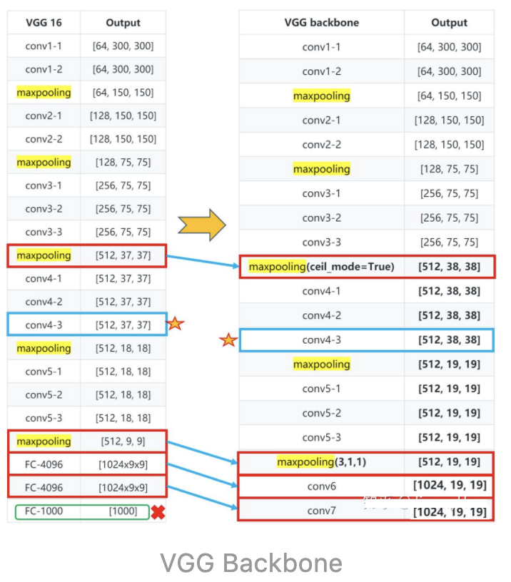
其中conv6使用的Dilated Convolutions，可以翻译为扩张卷积或空洞卷积。与普通的卷积相比，增加了一个扩张率(dilation rate)参数，主要用来表示扩张的大小。扩张卷积与普通卷积的相同点在于，卷积核的大小是一样的，在神经网络中参数数量不变，区别在于扩张卷积具有更大的感受野。如下图所示：
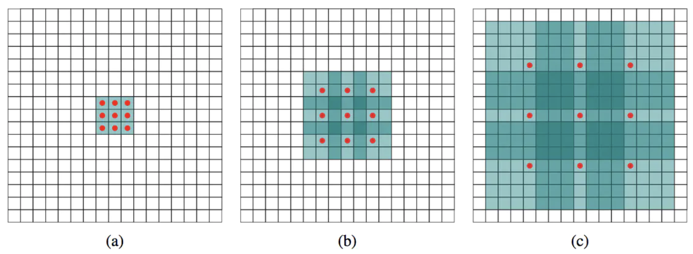
(a) 普通卷积，1-dilated convolution，卷积核的感受野为3 \times 3 = 9。 (b) 扩张卷积，2-dilated convolution，卷积核的感受野为7 \times 7 = 49。 © 扩张卷积，4-dilated convolution，卷积核的感受野为15 \times 15 = 225。
扩张卷积的感受野的计算方法是：
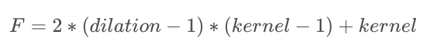
在tensorflow中实现使用的是：(与普通卷积不同的是指定dilation_rate即可)
layers.Conv2D(1024, 3, padding='same',dilation_rate=6, activation='relu'),
从上图中可以看出，卷积核的参数个数保持不变，感受野的大小随着“dilation rate”参数的增加呈指数增长。
1.2 extra部分¶
为了进行后续的多尺度特征提取，在Backbone后面添加了卷积网络，如下图所示：
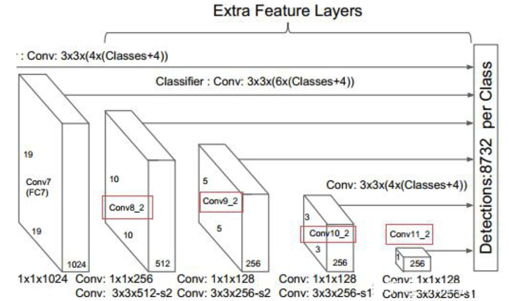
新增的Conv8_2，Conv9_2，Conv10_2，Conv11_2提取用于检测的特征图，特征图的大小如下表所示：
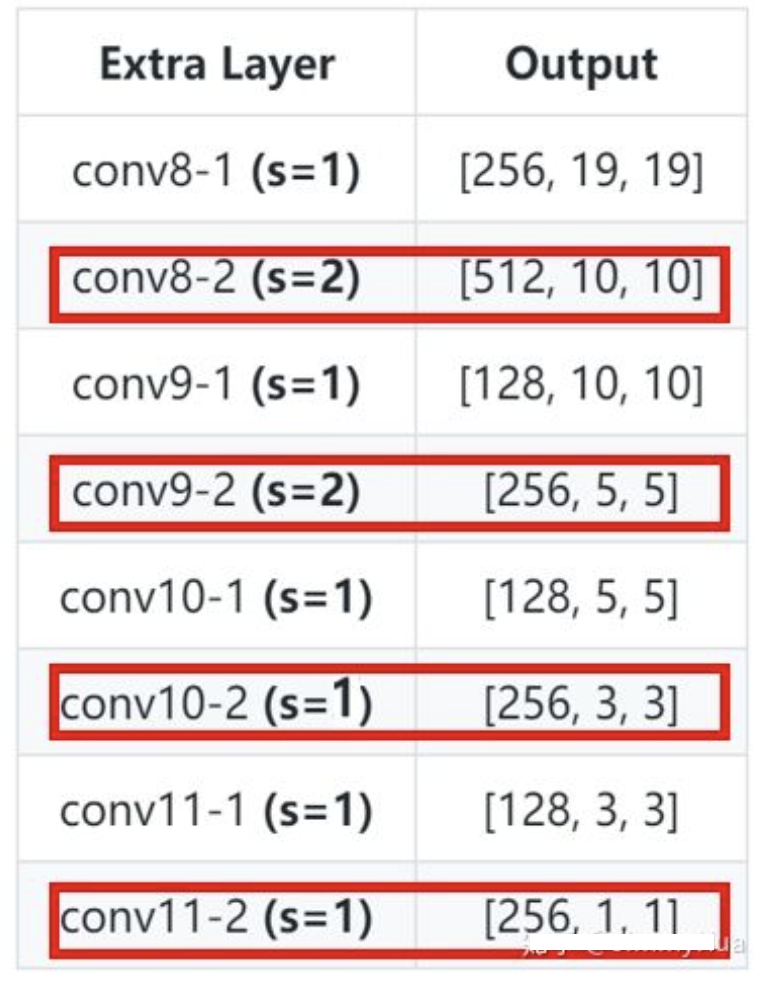
红框中的内容是进行多尺度分析的特征图，在加上backbone部分的Conv4_3和Conv7获取的特征图，共提取了6个特征图，其大小分别是 (38, 38), (19, 19), (10, 10), (5, 5), (3, 3), (1, 1)，我们将其送入到loc和cls中进行目标检测。
1.3 loc和cls¶
在backbone和 Extras 在提取的6个特征图的基础上，进行位置信息和分类信息的提取，其结构如下图所示：
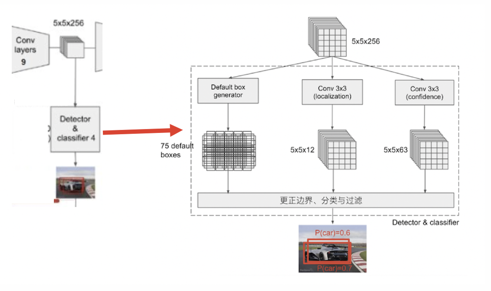
该部分主要有3个支路构成，
- PriorBox层，用来生成先验框，也就是在fasterRCNN中的anchorbox，假设先验框种类有3个（一个单元上有3个先验框），一共产生5x5x3=75个先验框
- Localization: 采用一次 3\times3 卷积来进行完成，每个先验框有四个坐标，共有5x5x3x4个预测结果
- 类别置信度confdence：采用一次 3\times3 卷积来进行完成，每个先验框有21个类别预测结果（VOC数据集），共有5x5x3x21个预测结果
整个过程如下图所示：
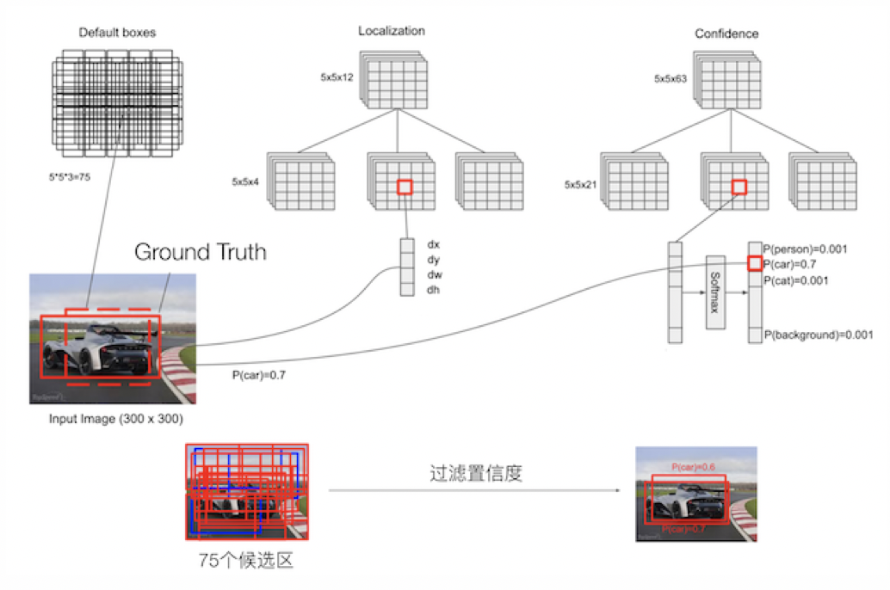
1.3.1 PriorBox层先验框的生成方法¶
在这里我们着重介绍PriorBox层先验框的生成方法：
SSD一共有6个不同尺度的特征图，每个特征图上设置的先验框数量不同的（同一个特征图上每个单元设置的先验框是相同的，这里的数目指的是一个单元的先验框数目）。
先验框的设置：包括尺度（或者说大小）和长宽比两个方面。
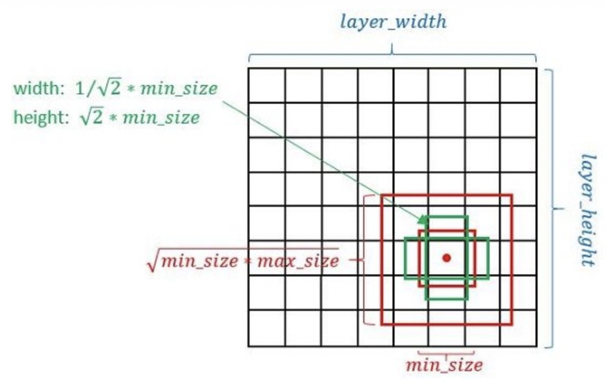
- 先验框的尺度
先验框的尺度遵守一个线性递增规则：随着特征图大小降低，先验框尺度线性增加，每个先验框的尺度有下式决定：
s_k = s_{min} + \frac{s_{max} - s_{min}}{m-1}(k-1), k\in[1,m]
其中：
m 指的特征图个数，这里设为5 ，因为第一层（Conv4_3层）是单独设置的。s_k表示先验框大小相对于图片的比例，而 s_{min} 和 s_{max}表示比例的最小值与最大值，取值为0.2和0.9。
1、对于第一个特征图，其先验框的尺度比例一般设置为 s_{min}/2=0.1 ，尺度为 300\times 0.1=30。
2、对于后面的特征图，先验框尺度按照 s_k 线性增加，增长步长为:
\lfloor\frac{\lfloor s_{max}\rfloor - \lfloor s_{min}\rfloor}{m-1}\rfloor=0.17
3、根据上式，我们可以计算出各个尺度 s_k 的取值为0.20, 0.37,0. 54, 0.71, 0.88
4、然后再乘以原图的大小300，再综合第一个特征图的先验框尺寸，则可得各个特征图的先验框尺寸为30,60,111, 162,213,264。
- 先验框的长宽比
一般选取 a_r\in {1,2,3,\frac{1}{2},\frac{1}{3}}，对于特定的长宽比，按如下公式计算先验框的宽度与高度（后面的 s_k均指的是先验框实际尺度，而不是尺度比例）:
w^a_{k}=s_k\sqrt{a_r},\space h^a_{k}=s_k/\sqrt{a_r}
默认情况下，每个特征图会有一个 a_r=1且尺度为 s_k 的先验框，除此之外，还会设置一个尺度为 s'_{k}=\sqrt{s_k s_{k+1}}且 a_r=1的先验框，这样每个特征图都设置了两个长宽比为1但大小不同的正方形先验框。
因此，每个特征图一共有 6 个先验框 {1,2,3,\frac{1}{2},\frac{1}{3},1'} ，但是在实现时，Conv4_3，Conv10_2和Conv11_2层仅使用4个先验框，它们不使用长宽比为 3,\frac{1}{3} 的先验框。
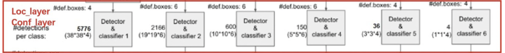
令 n_k为该特征图所采用的先验框数目，那么类别置信度需要的卷积核数量为 n_k，而边界框位置需要的卷积核数量为 n_k\times 4。由于每个先验框都会预测一个边界框，
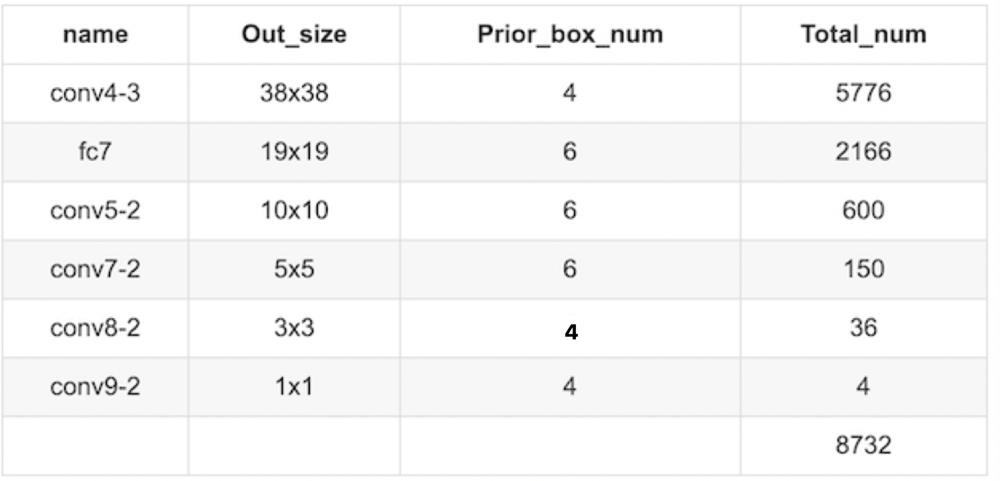
所以SSD一共可以预测 38\times38\times4+19\times19\times6+10\times10\times6+5\times5\times6+3\times3\times4+1\times1\times4=8732个边界框，对于一个300x300的图像就有8732个预测结果，是非常的多的，所以说SSD本质上是密集采样。
1.3.2 loc的预测结果¶
网络预测输出的边界框与真实的边界框之间存在转换关系，具体如下：
- 先验框位置：
l= (l^{cx}, l^{cy}, l^{w}, l^{h})
- 真实框的位置：
p = (p^{cx}, p^{cy}, p^{w}, p^{h})
那么网络输出结果d与边界框的位置存在关系：
p^{cx} =l^{w}d^{cx} +l^{cx}, p^{cy} = l^{y}d^{cy} +l^{cy}
p^{w} = l^{w}exp(d^{w}), p^{h} = l^{h}exp(d^{h})
2.模型训练¶
2.1 正负样本标记¶
在训练过程中，首先需要确定训练图片中的 ground truth 与哪一个先验框来进行匹配，与之匹配的先验框所对应的边界框将负责预测它。
SSD的先验框和ground truth匹配原则：
- 正样本
1、对于图片中的每个gt，找到与其IOU最大的先验框，该先验框与其匹配，这样可以保证每个gt一定与某个先验框匹配。
2、对于剩余未匹配的先验框，若某个gt的IOU大于某个阈值(一般0.5)，那么该先验框与这个gt匹配
- 负样本
其它的先验框标记为负样本
注意：
1、某个gt可以和多个先验框匹配，而每个先验框只能和一个gt进行匹配
2、如果多个gt和某一个先验框的IOU均大于阈值，那么先验框只与IOU最大的那个进行匹配
2.2 损失函数¶
SSD的损失函数是位置损失（ loc）与类别置信度损失（conf）的加权和：
L(x, c, l, g) = \frac{1}{N}(L_{conf}(x,c) + \alpha L_{loc}(x,l,g))
其中N 是先验框的正样本数量，c为类别置信度预测值， l为先验框的所对应边界框的位置预测值，而 g是ground truth的位置参数，权重系数 \alpha 设置为1。
- 位置损失函数：
针对所有的正样本，采用 Smooth L1 Loss损失
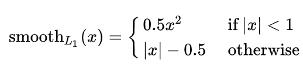
- 分类损失函数
对于分类损失，与fasterRCNN一样采用交叉熵损失。
2.3 困难样本挖掘¶
困难样本挖掘的思想是使用网络对样本进行处理，把其中预测错误的负样本(hard negative)放入负样本集合再继续训练网络模型。
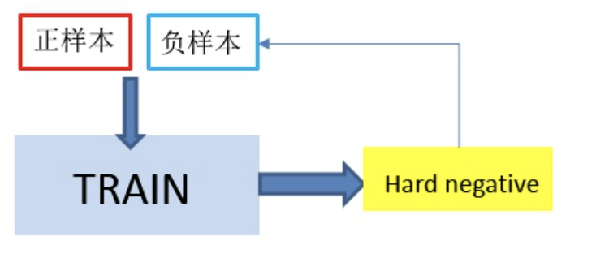
在SSD中处理方式是：
-
使用1：3的正负样本比例训练网络，
-
对输入的预测结果按照类别置信度进行降序排序，取出前k个负样本
- 将这k个负样本加入下次迭代的负样本中对网络进行训练。
3.模型预测¶
预测过程比较简单，
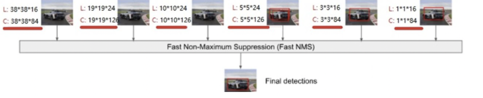
主要步骤如下：
-
对于每个预测框，首先根据类别置信度确定其类别（置信度最大者）与置信度值，并过滤掉属于背景的预测框。
-
然后根据置信度阈值（如0.5）过滤掉阈值较低的预测框。
-
对于留下的预测框进行解码，根据先验框得到其真实的位置参数（解码后一般还需要做clip，防止预测框位置超出图片）。
-
解码之后，一般需要根据置信度进行降序排列，然后仅保留top-k（如400）个预测框。
-
进行NMS算法，过滤掉那些重叠度较大的预测框。
-
最后剩余的预测框就是检测结果了。
总结
- 知道SSD的多尺度特征图的网络
SSD提取了6个不同特征图进行目标检测
- 知道SSD中先验框的生成方式
SSD在不同尺度的特征图上生成的先验框的尺度和长宽比是不一样的
- 知道SSD的损失函数的设计
分类和回归损失函数的加权和